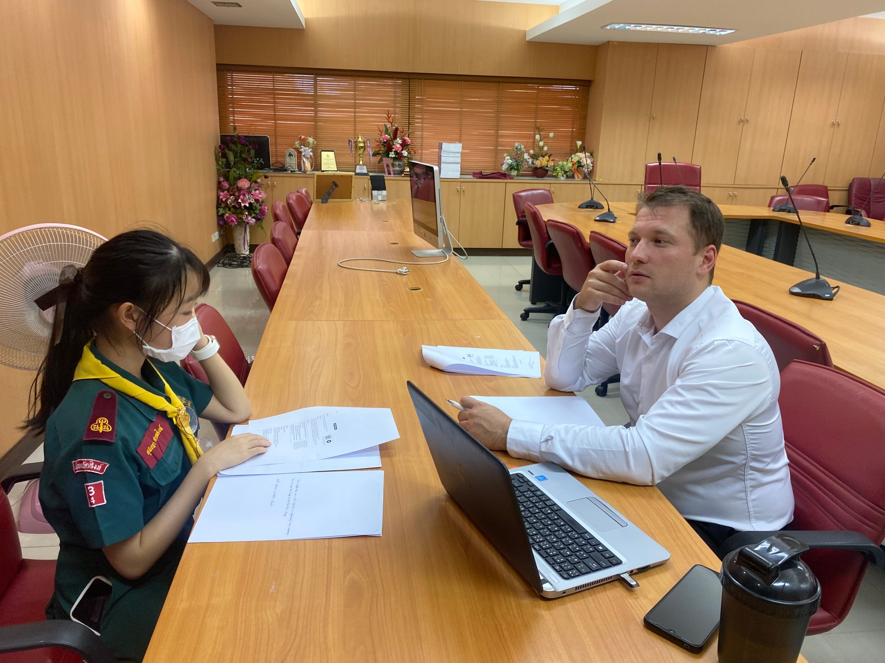
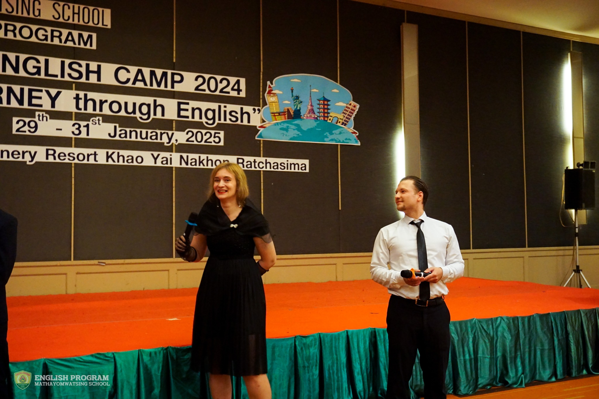

Semester 1 Academic Year 2024
In-school Impromptu speech competition

Responsibilities:
Equipping students with the necessary skills to articulate their thoughts clearly and confidently. Providing guidance, constructive feedback, and encouragement of the students.
Achievements:
The students have demonstrated exceptional analytical and communicative skills by effectively delivering structured and coherent speeches under time constraints. They have gained increased self-confidence and the ability to think critically, enabling them to express their ideas persuasively and with clarity.
Eco camp
Responsibilities:
Designing and facilitating educational activities that promote environmental awareness and sustainability during the Eco Camp. Guiding students in understanding ecological concepts, encouraging critical thinking and responsibility for cleanliness of environment through hands-on experiences.
Achievements:
The students have developed a greater understanding of environmental conservation, demonstrating knowledge of sustainable practices and ecological responsibility. Their experiences at the Eco Camp have enhanced their leadership and teamwork skills, empowering them to advocate for environmental sustainability in their communities.
Semester 2 Academic Year 2024
Cristmas carol broadcast
Responsibilities:
Organizing and guiding students through the preparation process, ensuring they were well-rehearsed and confident for the Christmas carol broadcast. I provided vocal training, coordinated song selections and managed logistics to create a smooth and engaging performance.
Achievements:
The students learned the value of teamwork and dedication as they collaborated to deliver a well-coordinated carol performance. They gained confidence in public performance, improving their vocal expression and stage presence. Moreover, they developed a deeper appreciation for cultural traditions and the joy of spreading holiday cheer.
English camp

Responsibilities:
Designing and implementing engaging activities that enhance students' English language skills in an immersive and interactive environment. Fostering supportive and stimulating atmosphere that promotes cultural exchange, teamwork, and a deeper appreciation for the English language.
Achievements:
The students have demonstrated significant improvement in their English proficiency, showcasing enhanced communication skills and increased fluency. They have gained confidence in expressing their ideas in English through various interactive activities, including presentations, group discussions, and creative writing exercises. Their participation in the English camp has not only strengthened their language abilities but also enriched their cultural understanding and collaborative skills in a diverse learning environment.
Open house 2025

Responsibilities:
Ensuring that the Open House event effectively showcases the school’s academic programs, extracurricular activities, and overall learning environment. Engaging with parents and visitors, addressing inquiries and highlighting the school’s academic achievements.
Achievements:
Successfully demonstrated their commitment to academic excellence by curating engaging presentations and exhibits that highlight student progress and school initiatives. Open House strengthened the school’s reputation, reinforcing trust and confidence in the quality of education.
Board Games Workshop

Responsibilities:
Selecting and incorporating board games that enhance students’ cognitive, strategic, and social skills in an engaging learning environment. Creating an inclusive and supportive atmosphere where students can develop patience, sportsmanship, and effective communication skills.
Achievements:
The students demonstrated improved strategic thinking and decision-making abilities through active participation in board games. Their involvement in board games has fostered a sense of patience, resilience, and adaptability, contributing to their overall personal and intellectual development.